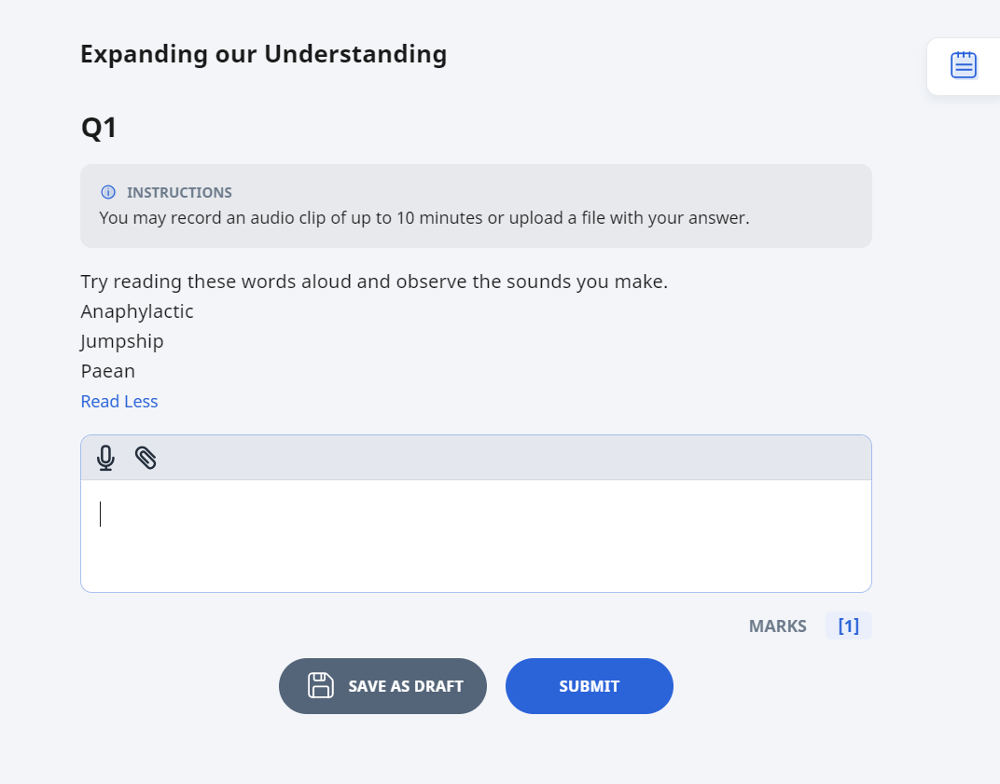
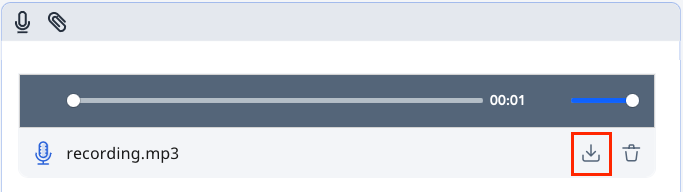
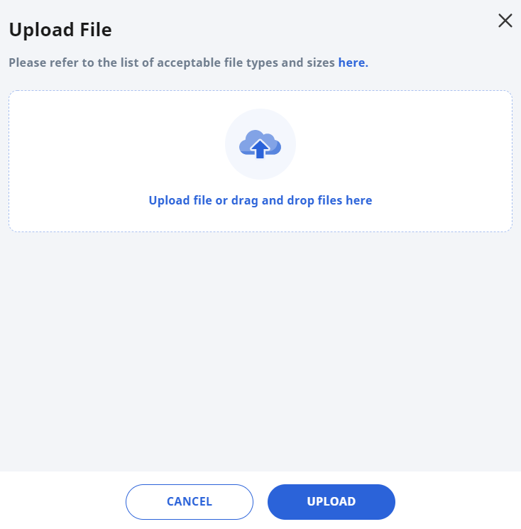

Audio-Response Question
Note: To use the Recording feature on iOS devices such as iPhones and iPads, make sure your device is updated to iOS/iPadOS 14.3 and your microphone setting in Safari is switched to "allow" mode.
-
For Audio-Response questions, you would need to allow the browser to access your microphone to start recording. Click the text box followed by the Recording icon at the top left to begin attempting the Audio Response question.
Note: Each recording can be up to a maximum duration of 10 minutes.
You can click the Play icon to listen to your recording to make sure that it is recorded successfully. Click the Download icon to save your recording on your local hard disk.
Note: Audio recordings can also be downloaded when it is still being processed.
You are allowed to attach only 1 recording at one time. You can delete the recording and redo a new recording before you submit it.
Alternatively, for devices that do not support the Recording feature, you can upload an audio or video file instead. Click here to find out how you can upload audio or video files.
In a standalone question that is not part of a quiz, you can submit your response by clicking the Submit button. You can also choose Save as Draft if you would like to revisit this question later on after you have visited other pages or logged out. Your responses will be saved.
Once you submit your response, you will be able to see the correct answer that your teacher might have provided.
In an Auto-Graded and a Teacher-Marked Quiz, you can submit after attempting the last question.
Note: You may also see the recommended time and the marks allocated for the question if your teacher has set them.
Rubrics in Audio-Response Questions
Some Audio-Response Questions contain Rubrics for reference. Click here to find out more.
Uploading Files for Audio Response Questions
For devices that do not support the Recording Feature, click the Upload File icon where there will be a pop up for you to drag and drop your file from an open folder window or by browsing. The accepted file types and limits are:
-
Audio (50MB max): mp3/ogg/webm/mpa/wav/wma/w4a
-
Video (500MB max): mp4/mov/m4v/ogv/avi/mpg/mpeg/wmv
